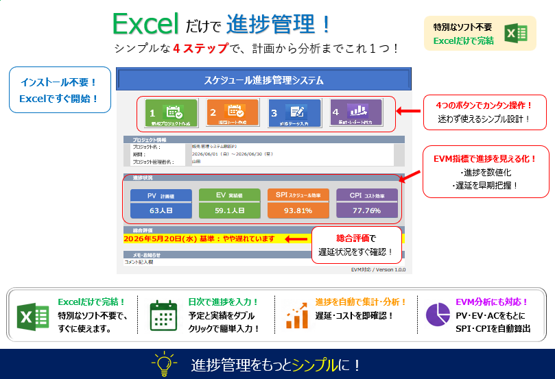

予定と実績を、数字で見る。
EVM対応 Excel進捗管理ツール

プロジェクトでは、まずスケジュールを作成します。
しかし、スケジュールを作っただけでは、 予定に対して実際の作業がどこまで進んでいるのか分かりません。
日々の実績を記録して予定と比較することで、 「予定より進んでいるのか、遅れているのか」が見えてきます。
さらに、進捗だけでなく、 予定したコストに対して実際にどれだけコストがかかっているのかも 把握する必要があります。
「予定・実績・コストを一体として管理したい」 という実務上の課題から、このツールを作りました。
タスクを整理し、 計画と実績を管理できます。
計画に対して、 実際にどこまで進んだかを確認できます。
PV・EV・ACから、 プロジェクトの状態を数値化します。
スケジュールとコストの効率を 数値で確認できます。
EVM（Earned Value Management）は、 プロジェクトの「計画」「実際の進捗」「実際にかかったコスト」を 数値で比較し、プロジェクトの状況を把握するための管理手法です。
単純な「進捗率」だけでは分かりにくい スケジュールの遅れやコストの状況を、 客観的な指標で確認できます。
| 指標 | 名称 | 意味 |
|---|---|---|
| PV | Planned Value | 計画上、この時点までに完了しているはずの仕事の価値 |
| EV | Earned Value | 実際に完了した仕事の価値 |
| AC | Actual Cost | 実際にかかったコスト |
| SPI | Schedule Performance Index | スケジュールの進捗効率を示す指標 |
| CPI | Cost Performance Index | コストの効率を示す指標 |
1.0未満：計画より遅れている可能性
1.0：計画どおり
1.0超：計画より進んでいる可能性
1.0未満：コスト効率が悪化している可能性
1.0：計画どおり
1.0超：コスト効率が良い可能性
5,980円
Excelで、予定・実績・コストを一体管理。
BOOTHで購入する